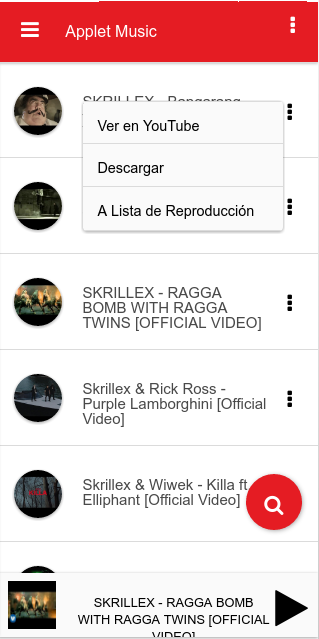

Applet Music

>
Esta aplicación es un reproductor de música que nace de una problemática presente en los dispositivos móviles al tratar de ver un video en YouTube y seguir reproduciendo la música en segundo plano, mientras el dispositivo es utilizado en otro propósito, la reproducción de esta es detenida hasta que se vuelve acceder a YouTube. Gracias a esta aplicación es posible solo reproducir la música sin la necesidad de el video, pudiendo así dejarla en segundo plano y inutilizar otras aplicaciones del dispositivo. Al tratarse de una aplicación desarrollada en HTML5 es posible ejecutarla en múltiples plataformas como; Android, iOS, Windows Phone y sistemas operativos de escritorio como Windows, Linux y Mac.
ver en GitHub